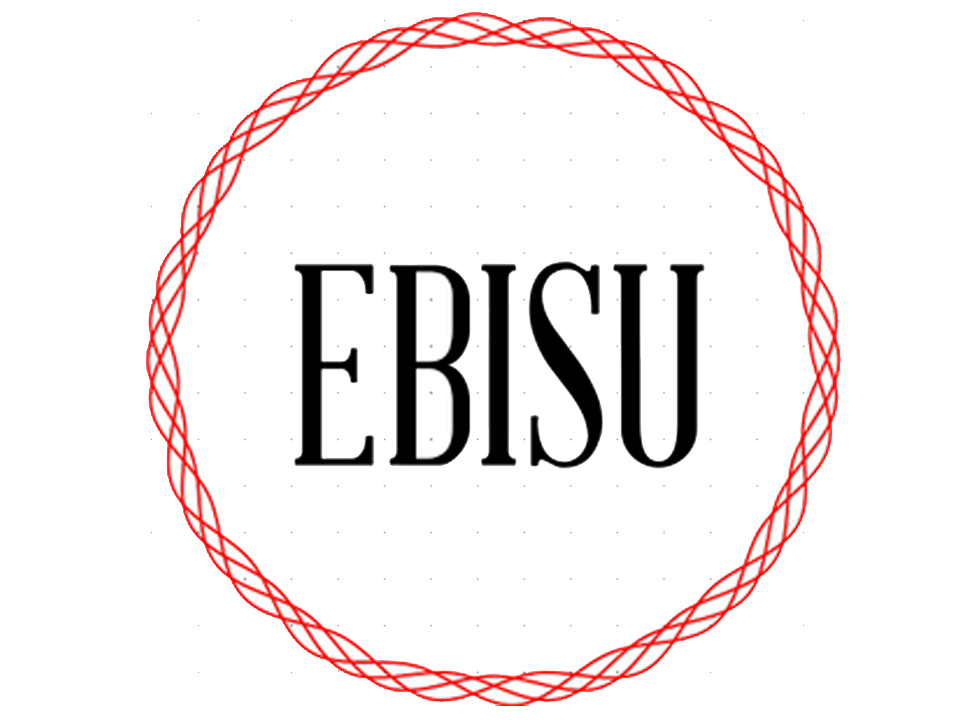

<nav class="navbar" role="navigation" aria-label="main navigation">
  <div class="navbar-brand">
      <a class="navbar-item" href="/">
          
      </a>

      <a role="button" class="navbar-burger" aria-label="menu" aria-expanded="false" data-target="navbarBasicExample">
          <span aria-hidden="true"></span>
          <span aria-hidden="true"></span>
          <span aria-hidden="true"></span>
      </a>
  </div> 
  
  <div id="navbarBasicExample" class="navbar-menu">
      <div class="navbar-end">
          <div class="navbar-item">
              <div class="buttons">
                  <a href="" class="button is-primary">
                      <strong>Registrarse</strong>
                  </a>

                  <a href="" class="button is-light">
                      <strong>Ingresar</strong>
                  </a>
              </div>
          </div>
      </div>
  </div>
</nav>

<router-outlet></router-outlet>

<footer class="footer">
  <div class="content has-text-centered">
    <p>
      <strong>Ebisu</strong> fue creado por <a href="https://www.linkedin.com/in/abisur-simei-diaz-ramirez-957a7a121/">Abisur Diaz</a>
    </p>
  </div>
</footer>